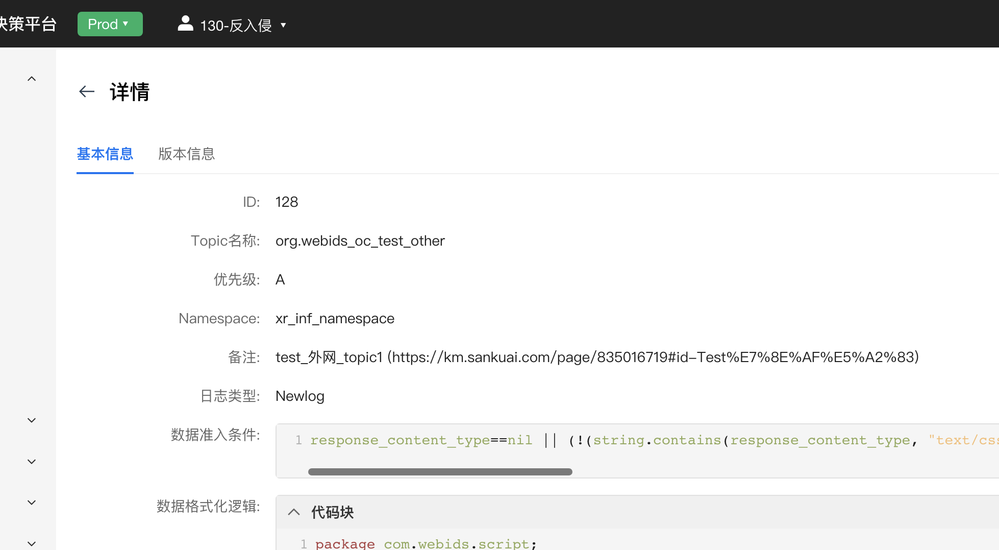
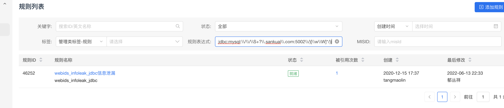

数据源任务错误日志排查实践
查找数据
1.点击查看作业 比如第一个任务https://zeus.sankuai.com/data_zeus_static/#/dataKafkaDetails?id=128

关键的参数：
sourceId : 实时作业ID
sourceData: kafka数据
config：报错的表达式
contextData : 报错表达式使用的上下文数据
定位问题
- 找到报错规则:复制config数据，去负责列表页面搜索

解决问题
将contextData数据带入测试用例测试，确认报错点
1.通过使用zeus页面测试用例测试的方式排查问题点
2.通过本地idea调试该问题
3.后面会上线一个表达式执行工具，来帮忙调试这个问题
观察修复情况